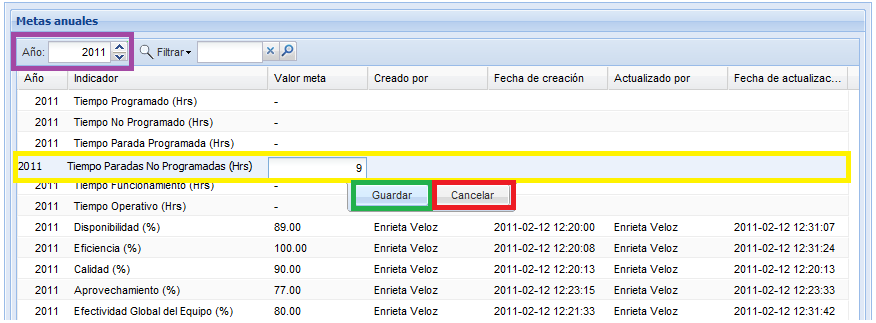

Ingresar un meta
Seleccione el Año
(1) para el cual va a ingresar una meta, luego seleccione y de
doble click sobre el indicador que desea ingresar, digite el
valor de la
meta (2) y pulse el botón Guardar
(3). El sistema desplegará un mensaje en el cual
informará que la meta ha
sido actualizada exitosamente. En la Figura 2 se resaltan
los items a
tener en cuenta para un ingreso o actualización de metas.

Figura 2. Pantalla para el ingreso o modificación de una
meta.
Actualizar
Para actualizar una meta debe dar doble click
sobre la meta que desea actualizar, digite
el valor de la meta y luego pulse el botón Guardar.
El sistema desplegará un mensaje que informa que se ha
actualizado con éxito.